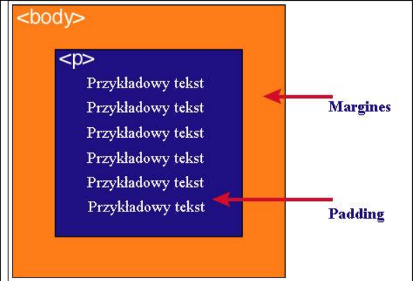

Model pudełkowy CSS opisuje wizualną prezentację elementów strony w przeglądarkach graficznych. Model pudełkowy precyzuje graficzną strukturę elementów blokowych, takich jak p lub blockquote , na którą składają się zawartość (content), odstępy (padding), ramka (border) i marginesy (margins).
| Zawartość | Opis |
| Kontent | zawartość elementu (np.: tekst, obrazek) |
| padding | otaczające marginesy wewnętrzne, odstęp między obramowaniem i zawartością elementu |
| border | obramowania wokół zawartości elementu, ma styl i kolor |
| margin | – marginesy wokół ramki (margines zewnętrzny). Jest to pusty obszar wokół ramki, który nie ma koloru tła i jest przeźroczysty |
Uwaga 1
Padding, border i margin mogą mieć zerową wartość
Uwaga 2
Tło elementu jest określone dla wszystkich z podanych powyżej obszarów z wyjątkiem
marginesów zewnętrznych, które zawsze są przezroczyste (transparent).

Padding określa przestrzeń wokół danego elementu, np: < p > lub >div>, natomiast margines przestrzeń pomiędzy elementami.

Jak widać na rysunku, padding oznaczony jest kolorem niebieskim. Określa on wielkość przestrzeni wokół elementu < p >. Element ten posiada również margines zaznaczony kolorem pomarańczowym. Jest to odległość od brzegu elementu < body >.